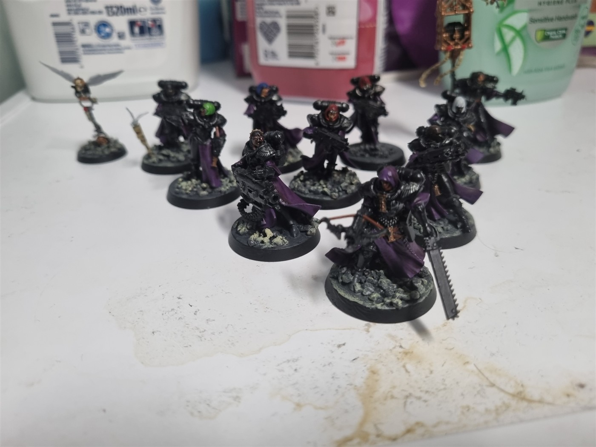

Adeptus Sororitas ·
We Welcome the Expatriated Lily’s
My Adeptus Sororitas Kill Team, the Expatriated Lily’s, is finally finished. This was a challenging project that took several months, but I’m proud to present these fierce ladies!


Another view of the team

Meet the team
Ten Battle Sisters and their Cherub. Select a name to see the miniature, or open any photo for a closer look.
Battle Sister Superior
Johanna D Steiner

More angles (3)


Battle Sister Icon Bearer
Anastasia

More angles (3)


Battle Sister Heavy Gunner
Barbara

More angles (3)


Battle Sister Warrior
Clare

More angles (3)


Battle Sister Warrior
Beatrice

More angles (3)


Battle Sister Gunner
Teresa

More angles (3)


Battle Sister Warrior
Anette

More angles (3)


Battle Sister Warrior
Zara

More angles (4)


Battle Sister Warrior
Maria

More angles (3)


Battle Sister Warrior
Bernadette

More angles (3)


Cherub
Cherub

More angles (3)


Originally shared on TBD’s Hobby Corner.